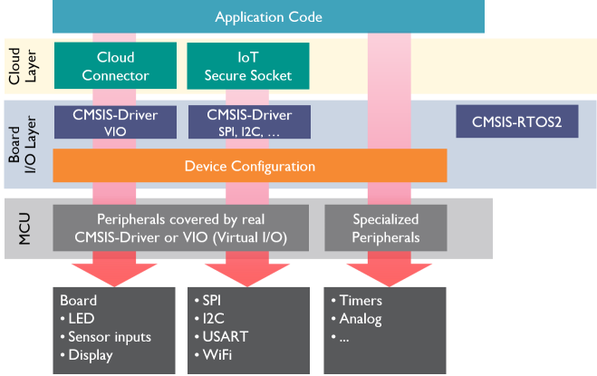

CMSIS-Build is a set of tools, software frameworks, and work flows that improve productivity:
- CPRJ is a generic CMSIS-aware project file format that allows IDEs and command-line build tools to share the same projects.
- A Continuous Integration (CI) work flow for projects that are based on software components supplied in CMSIS-Pack format.
- Software Layers enable code reuse across different targets. A software layer is a pre-configured software component selection and user source code.
- CMSIS-Driver VIO is a set of generic input/output functions for example and test code. It allows to fast migration from evaluation boards to production hardware.
The figure below shows how the CMSIS-Build components may be used to create a IoT cloud application:
- The Board I/O layer contains the drivers and device configuration for a specific evaluation board.
- The Cloud layer implements the software components that are required to connect to a Cloud Service Provider (CSP).
- The Application Code may start with reference example and is expanded to application specific requirements that access specialized peripherals.

Software Layers and Virtual I/O
Software layers and Virtual I/O simplify these use cases:
Port software from evaluation board to custom hardware:
- Frequently, the software development starts on an evaluation board, for example because production hardware is not yet available. The VIO component allows you to use the I/O capabilities of an evaluation kit and disconnect it when moving to production hardware. In case the production hardware uses a different device configuration or different I/O drivers, the Board I/O layer may be swapped.
Deliver reference examples for many different evaluation boards:
- Reference examples are a great way to demonstrate a software solution. It is however expensive to support many different evaluation boards. The VIO and CMSIS-Driver components give reference examples for a consistent interface to target hardware. When such a consistent set of components is available as a Board I/O layer for many different evaluation boards, it allows to run a Cloud layer together with a reference example. The tools for Command Line Build allow to combine various different layers and allow in this way to generate several different reference examples on a range of evaluation boards.
Components of CMSIS-Build
Specification of a generic project file format:
Tools that support Command Line Build with software packs and the generic project file format: